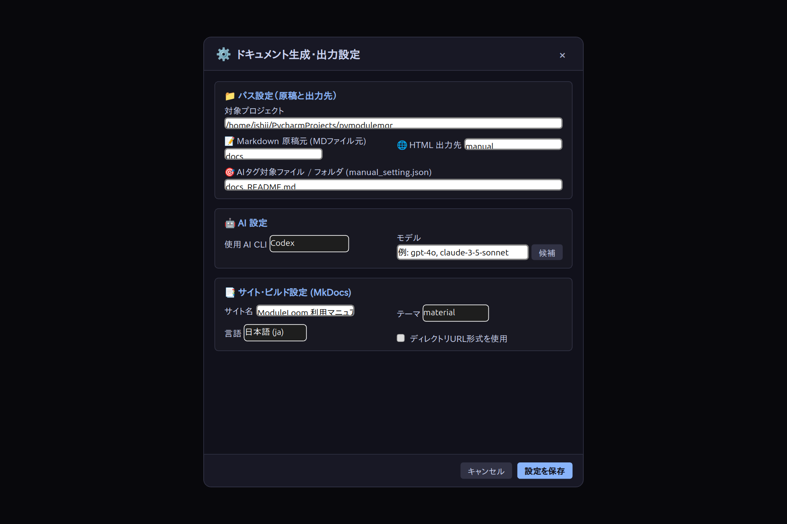
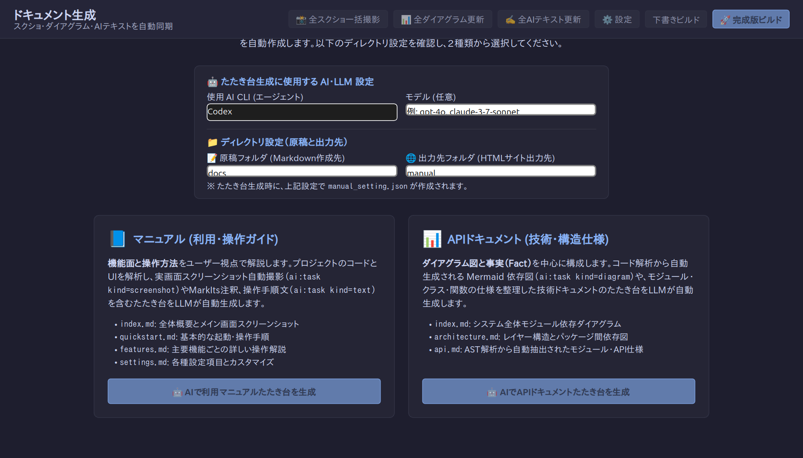
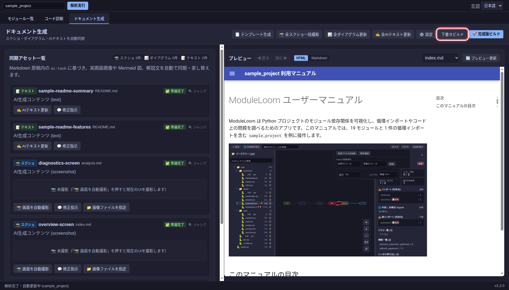

ドキュメントを生成する
ドキュメント生成タブでは、Markdown 原稿と画面画像・依存図を管理し、MkDocs の HTML サイトを出力します。スクリーンショットと Mermaid 図は原稿内のタスクに対応します。
原稿と出力先を確認する
設定で対象プロジェクト、Markdown 原稿のフォルダー、HTML の出力先を確認します。この例では原稿が docs/、出力先が manual/ です。

原稿がない場合は テンプレート生成から下書きを作れます。既存の原稿がある場合は、その内容を確認してから生成を実行してください。

画像と図を更新する
原稿にスクリーンショットのタスクがある場合、更新対象アセットの 撮影指示をコピーで ai:task の指示と保存先をコピーできます。対象アプリを開いて必要な画面を表示した後、Linux/X11では ウィンドウを撮影から対象ウィンドウを選択し、必要なら外枠の余白を除いてPNGを登録できます。Wayland、macOS、Windowsでは現在ウィンドウ撮影に対応していません。撮影対象のアプリを操作できるAIエージェントやOSの撮影機能でPNGを作り、PNGを登録でファイルを指定してください。登録すると原稿の ai:generated に画像リンクが入ります。
依存図のタスクは 全ダイアグラム更新で更新します。API リファレンスが必要な場合は API ドキュメント生成を使い、docstring と型注釈からモジュール別のページを作ります。
ビルドして確認する
下書きビルドは未完成のタスクを残したままプレビューを作ります。右側の HTML 表示でページを確認し、画像や文章を直した後に 完成版ビルドを実行します。完成版ビルドでは、未解決のタスクがあるとエラーになります。

AI タグの仕様
Markdown 原稿では、生成・撮影・更新する箇所を ai:task タグで指定します。タグは HTML コメントなので、生成前の原稿を通常の Markdown 表示にしても指示文は本文に表示されません。
<!-- ai:task id=quickstart-guide kind=text
初めて使う人向けに、プロジェクトの指定手順を説明してください。
-->
<!-- ai:task id=overview-shot kind=screenshot
メイン画面を撮影してください。
-->
<!-- ai:task id=module-map kind=diagram
モジュール間の依存関係を図にしてください。
-->
id はタスクを識別する名前です。省略時は種類・ファイル名などから自動生成されます。明示する場合は小文字英字で始め、小文字英数字とハイフンだけを使います（^[a-z][a-z0-9-]*$）。ID はすべての原稿 Markdown ファイルを通じて重複しないようにします。
kind は text（説明文）、screenshot（画面画像）、diagram（Mermaid 図）のいずれかです。省略すると text として扱われます。タグの開始行の後で改行して指示を書き、終了の --> は別の行に置いてください。指示文は空にできません。
種類ごとに生成内容を分けます。text には説明文、screenshot には画像 Markdown、diagram には Mermaid コードブロックだけを置きます。画像の説明や図の注釈が必要な場合は、別の kind=text タスクを使います。
生成後も ai:task は更新指示として残し、その直下に同じ id の ai:generated ブロックを置きます。更新対象アセットの タスク指示を編集から本文を変更して保存すると、原稿の ai:task に反映されます。画像タスクでは保存した指示をコピーして撮影担当のエージェントに渡し、出来上がったPNGを登録します。テキストと図は次回の生成で指示を使って回答を更新します。指示や種類が変わると既存の回答は古い状態になります。下書きビルドでは未完了タスクを確認できますが、完成版ビルドには各タスクの最新の回答が必要です。
CLI から既存の Python コードに基づく MkDocs ページだけを生成する場合は、次のコマンドを使用します。
moduleloom-analyze --mkdocs ./moduleloom-docs ./sample_project
UI Map と変更影響を確認する
CLI の --manual ui-map --root . は、アプリの HTML・TypeScript・JavaScript から UI Map を作り、manual/ui_map.json に保存します。生成された Map は参照元のファイルが変わると再解析されます。以前のバージョンで作った Map を再生成するには --manual ui-map --root . --refresh を実行します。手動で管理する場合は JSON の source_hash フィールドを削除してください。manual/ と docs/ の生成物は解析対象に含めません。
対象アプリを実際に操作できる AI や自動化ツールで画面を調べた場合、その観測結果を JSON に保存して --manual ui-map-import --root . --input observation.json で取り込めます。例:
{
"source": "http://127.0.0.1:3000/settings",
"platform": "web",
"views": [{
"id": "settings",
"name": "Settings",
"elements": [
{"id": "model", "selector": "#model", "name": "AI model", "role": "combobox"}
]
}]
}
source には確認した URL または画面名を入れます。デスクトップアプリでは platform に linux-x11 などを、selector にアクセシビリティ識別子などを記録できます。ModuleLoom は観測元と取り込み時刻を保存し、静的解析の要素と統合します。対象プロジェクトの UI ソースが変わると、古い観測結果は Map から外れます。外部アプリのコード変更は検知できないため、その場合は再探索して取り込み直してください。
--manual impact --root . --ref HEAD は、Git の変更と原稿の関連付けから更新候補ページを表示します。実行時に依存関係グラフを作り直します。自動推測は主に Python モジュールと UI 要素 ID に基づきます。明示した file は言語を問わず、Git の変更パスと照合します。結果は確認候補として扱ってください。操作シナリオの実行や文章の事実検証は行いません。
ページやタスクとコードの関係が分かっている場合は、原稿に依存関係を明記できます。
<!-- ai:depends file=src/settings.rs -->
<!-- ai:depends task=settings-shot file=src/settings.rs ui=#model -->
task を省くとページ全体、指定すると同じページの ai:task に結び付きます。file はプロジェクト内の相対パスで、Python 以外のファイルも指定できます。symbol と ui も指定できます。複数のファイルを結ぶ場合は行を分けてください。宣言は HTML コメントとして扱われ、マニュアル本文には表示されません。--manual deps --root . の evidence には明示した関係を ai:depends として記録します。推測で見つけた関係は text-match として区別します。
変更後に更新対象を確認するには --manual impact-plan --root . --ref HEAD を実行します。結果の generate_tasks は自動更新できる文章・図、manual_tasks は撮影などの手作業が必要なタスク、approved_tasks は承認済みで自動更新しないタスクです。page_only は変更の影響があるものの、個別のタスクまで特定できないページです。
--manual generate-impacted --root . --ref HEAD は、同じ計画の generate_tasks だけを順に更新します。実行前に impact-plan で対象を確認してください。途中で生成が失敗した場合はその時点で終了し、それ以前に更新したタスクは残ります。スクリーンショットや承認済みタスク、ページ単位の候補は自動更新しません。
Web 画面の撮影シナリオ
Web アプリでは操作を JSON ファイルに記録し、順に実行できます。対象プロジェクトに Node.js、playwright-core、Google Chrome が必要です。npm install --save-dev playwright-core で依存を追加してください。Chrome が標準の場所にない場合は MODULELOOM_CHROME_PATH に実行ファイルのパスを設定します。
{
"version": 1,
"base_url": "http://localhost:3000/",
"steps": [
{"goto": "/"},
{"click": "#settings-button"},
{"expect_visible": "#settings-dialog"},
{"screenshot": {"task": "settings-shot", "selector": "#settings-dialog"}}
]
}
原稿には settings-shot という kind=screenshot の ai:task を用意します。--manual scenario-run --root . --input scenario.json を実行すると、指定した要素だけを docs/assets/settings-shot.png に撮影し、タスクの ai:generated に画像リンクを登録します。selector を省けば表示中のページ全体を撮影します。操作には goto、click、fill（{"selector":"#name","value":"example"}）、expect_visible、screenshot を使用できます。失敗時はステップ番号を表示し、タスクへの登録は行いません。現在の実行対象は Web ページです。